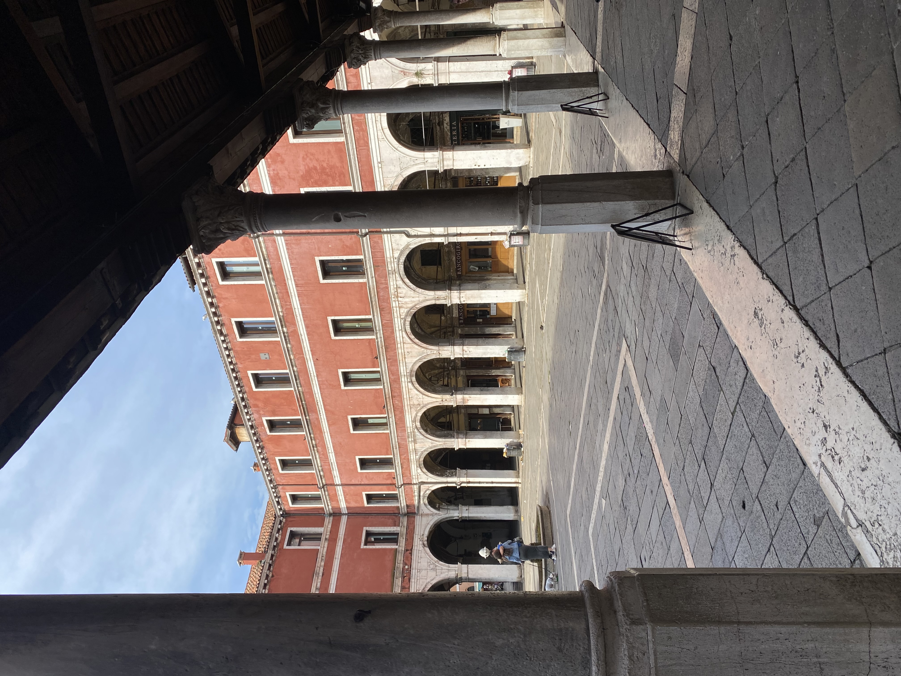
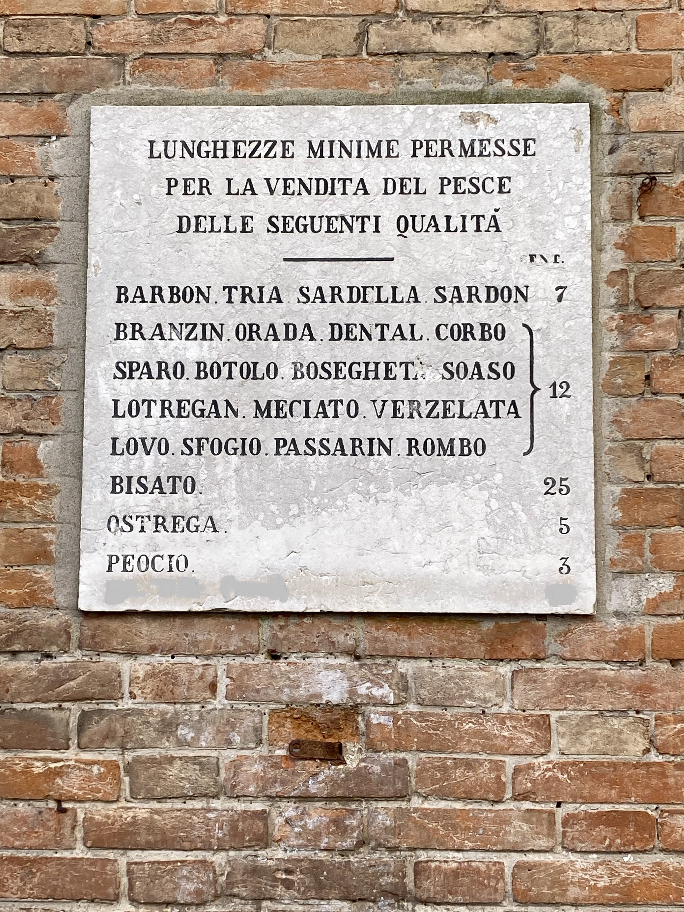
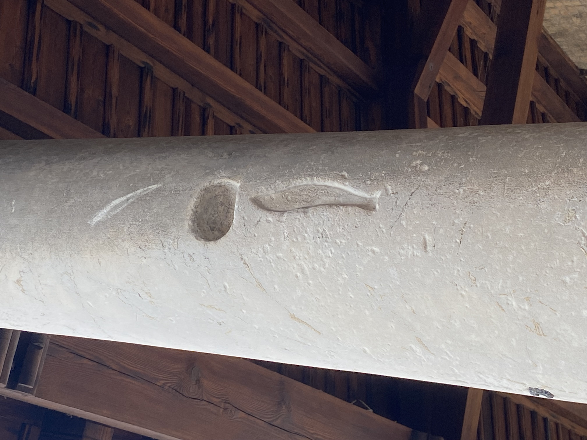

In Venice, a judiciary body was in charge of controlling and ensuring that the minimum sizes for sale were respected. The Serenissima Republic of Venice was particularly strict with those selling undersized fish.

Even today, in the Rialto fish market, you can see a white marble plaque listing the minimum lengths allowed for the sale of fish.

Even more interesting and curious is the engraving on the column of the portico of the Church of San Giacomo, also in Rialto, which displays the minimum size requirements for both fish and mussels.
